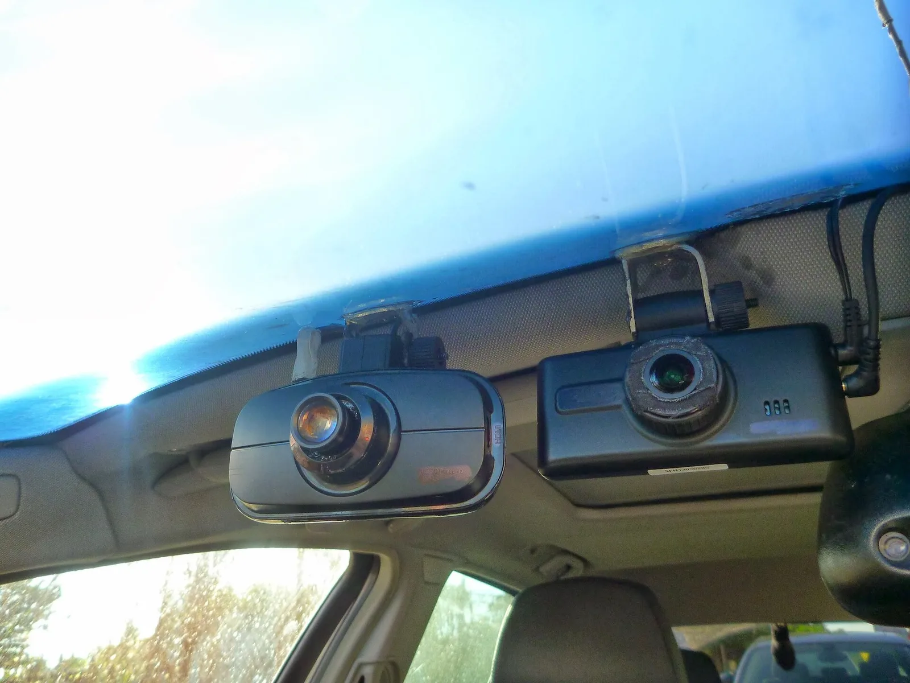
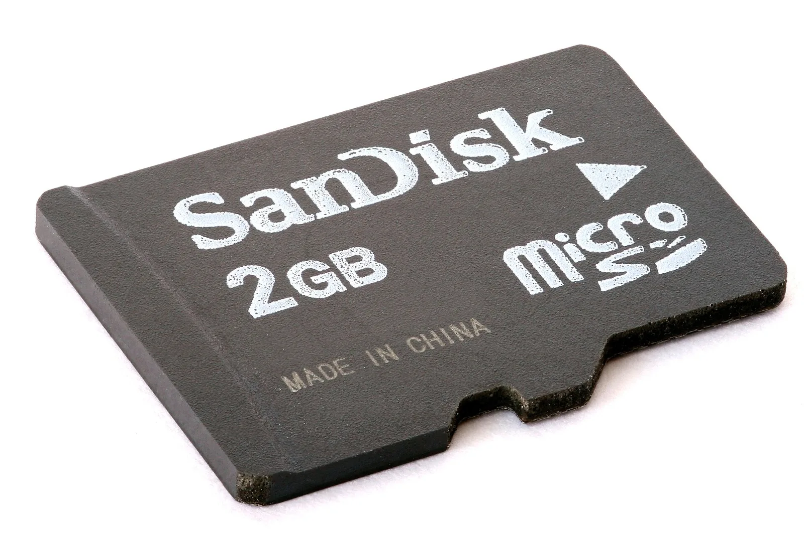

▲ 차량 앞유리에 장착된 블랙박스(자료사진). 상시녹화 중인 블랙박스의 SD카드는 매 순간 쓰기·지우기를 반복하고 있다 ⓒ Fernost, Wikimedia Commons (Public Domain)
블랙박스는 시동을 켜는 순간부터 꺼질 때까지, 심지어 주차 중에도 계속 녹화한다. 그 영상이 저장되는 곳은 결국 작은 메모리카드 하나다. 스마트폰이나 카메라의 SD카드와 달리, 블랙박스용 SD카드는 훨씬 가혹한 조건에서 혹사당하고 있다는 사실은 의외로 잘 알려져 있지 않다.
1. 상시녹화가 SD카드 수명을 갉아먹는 이유
대부분의 SD카드는 낸드플래시(NAND Flash) 메모리를 기반으로 동작한다. 낸드플래시는 데이터를 저장하는 각 셀에 데이터를 쓰고 지울 수 있는 횟수(P/E 사이클, Program/Erase Cycle)에 물리적인 한계가 있다. 한계를 넘어서면 그 셀은 더 이상 안정적으로 데이터를 저장하지 못하게 된다. 셀 하나에 몇 비트를 저장하느냐에 따라 SLC(1비트)·MLC(2비트)·TLC(3비트)·QLC(4비트)로 나뉘는데, 일반 소비자용 SD카드에 흔히 쓰이는 TLC 방식은 P/E 사이클이 대략 1000~3000회 수준으로, 수만 회에 달하는 SLC 방식보다 내구성이 크게 낮다. 저장 용량을 늘리기 위해 셀 하나에 더 많은 비트를 욱여넣을수록 수명은 짧아지는 구조인 셈이다.
스마트폰이나 카메라의 SD카드는 하루에 몇 번, 필요할 때만 데이터를 쓴다. 반면 블랙박스는 시동이 걸려 있는 내내, 그리고 주차 중 감지 녹화까지 더해 24시간 내내 데이터를 쓰고 지우는 것을 반복한다. 저장 공간이 꽉 차면 오래된 영상부터 자동으로 지우고 그 자리에 새 영상을 덮어쓰는 순환 녹화(루프 레코딩) 방식이기 때문에, 사실상 같은 저장 영역을 계속 재사용하는 셈이다. 이 반복이 일반적인 사용 환경보다 메모리 셀에 훨씬 큰 부담을 준다.

▲ 블랙박스는 주행 중은 물론 주차 중에도 순환 녹화를 반복한다(자료화면). 그만큼 저장 공간은 쉬지 않고 재사용된다 ⓒ 카프리즘

▲ 마이크로SD 카드(자료사진). 겉보기엔 똑같아 보여도 내부 낸드플래시의 내구성 등급은 제품마다 크게 다르다 ⓒ Afrank99, Wikimedia Commons (CC BY-SA 3.0)
2. 권장 포맷 주기 — 왜 필요한가
포맷은 단순히 데이터를 지우는 작업이 아니다. 쓰기·지우기 작업을 저장 공간 전체에 고르게 재분배(웨어 레벨링)하고, 이미 손상되기 시작한 셀을 격리해 더 이상 사용하지 않도록 하는 역할을 한다. 포맷을 오래 하지 않으면 파일 시스템에 조각이 쌓이고, 특정 영역에만 쓰기가 집중되면서 그 부분부터 먼저 수명이 다하게 된다.
제조사들은 대체로 최소 한 달에 1~2회 수동 포맷을 권장한다. 포맷을 몇 달 이상 하지 않으면 프레임 끊김, 녹화 중단, 파일 손상 등의 문제가 나타나기 시작한다. 최근 블랙박스는 앱이나 본체 메뉴에서 자동 포맷 주기를 설정할 수 있는 경우가 많으므로, 매번 수동으로 하기 번거롭다면 자동 포맷 기능을 켜두는 것도 방법이다.
| 관리 항목 | 권장 주기 | 하지 않을 경우 |
|---|---|---|
| 수동 포맷 | 월 1~2회 | 프레임 끊김, 녹화 오류 누적 |
| 카드 자체 점검(정상 재생 확인) | 분기 1회 | 실제 사고 시점에 영상 부재 발견 |
| 카드 전체 교체 | 1년 전후(일반 카드 기준) | 수명 소진 후 녹화 불능 위험 |
| 고내구성 전용 카드 사용 시 교체 | 제품별 3~5년 보증 | - |
3. 일반 SD카드와 블랙박스 전용 카드, 뭐가 다른가

▲ 실시간 녹화 중인 블랙박스 화면(자료사진). 화면 좌측 하단 전압 표시처럼, 카드 상태도 주기적으로 점검해야 한다 ⓒ 카프리즘
겉모습이 똑같아 보여도 SD카드의 내구성 등급은 제품마다 크게 다르다. 일반 소비자용 SD카드는 사진·문서처럼 가끔씩만 쓰기 작업이 일어나는 환경에 맞춰져 있어, 블랙박스처럼 끊임없이 덮어쓰는 환경에서는 예상보다 빨리 수명을 다한다.
이 때문에 주요 메모리 제조사들은 CCTV·블랙박스·바디캠처럼 상시녹화가 필요한 기기 전용으로 고내구성(Endurance) 카드를 별도로 출시하고 있다. 예를 들어 삼성전자의 'PRO Endurance' 라인업은 256GB 기준 약 16년(약 14만 시간) 연속 녹화가 가능한 내구성을 갖췄다고 밝히고 있으며, 일반 메모리카드 대비 수명이 약 33배 길다고 설명한다. 보증 기간은 용량별로 차등 적용돼 128GB·256GB 제품은 5년, 64GB 제품은 3년, 32GB 제품은 2년이다. 블랙박스를 새로 달거나 카드를 교체할 계획이라면, 가격이 조금 비싸더라도 '고내구성', 'Endurance', '블랙박스 전용' 등으로 표기된 제품을 선택하는 것이 장기적으로 유리하다.
고내구성 메모리카드 정보 확인4. 카드 수명이 다했을 때 나타나는 증상
SD카드는 수명이 다하면 보통 서서히 문제를 드러낸다. 다음과 같은 증상이 반복된다면 카드 교체를 의심해야 한다.
- 영상 깨짐·모자이크 현상: 재생 시 화면 일부가 깨지거나 블록 형태로 뭉개져 보인다.
- 녹화 중단·파일 누락: 특정 구간의 영상 파일이 아예 생성되지 않거나 도중에 끊긴다.
- 카드 인식 불가: 블랙박스나 PC에서 카드 자체를 읽지 못하는 상태. 수명이 다한 낸드플래시는 데이터 보호를 위해 스스로 쓰기 금지(Read-only) 상태로 전환되기도 한다.
- 포맷 반복 요구: 포맷을 했는데도 얼마 지나지 않아 다시 오류 메시지가 뜬다면 물리적 수명 소진 가능성이 크다.
이런 증상이 나타난 뒤에도 계속 사용하면, 정작 사고가 났을 때 결정적인 순간의 영상이 저장되지 않았거나 손상돼 있는 최악의 상황을 맞을 수 있다. 증상이 한두 번이라도 반복되면 미루지 말고 카드를 교체하는 것이 안전하다.
5. 블랙박스 SD카드 관리 체크리스트
체크 포인트
- 한 달에 1~2회, 수동 또는 자동 포맷을 습관화하자.
- 구매 시 일반 SD카드가 아닌 블랙박스·CCTV 전용 고내구성 카드를 선택하자.
- 영상이 깨지거나 카드가 인식되지 않으면 즉시 교체하자.
- 특별한 이상이 없어도 1년 주기로 교체를 고려하자.
6. 정리
체크포인트
- 블랙박스 상시녹화는 낸드플래시의 쓰기 횟수 한계를 일반 사용보다 훨씬 빨리 소진시킨다.
- 월 1~2회 포맷과 1년 주기 교체가 기본 관리 원칙이다.
- 고내구성(Endurance) 전용 카드는 일반 카드보다 수명이 훨씬 길다.
- 영상 깨짐이나 인식 불가 증상이 보이면 지체 없이 카드를 바꾸자.